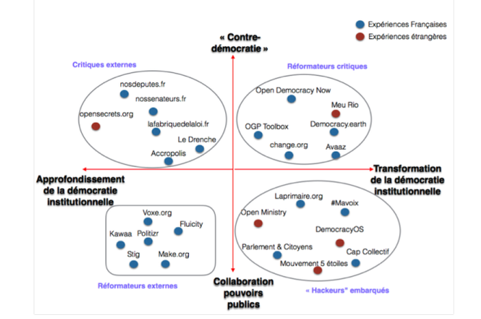

On entend de plus en plus dire que le système démocratique est obsolète, trop lent, pas assez adapté à l’ère du numérique où tout est instantané… Les points contestés de ce système largement répandu sont nombreux – comme, par exemple, le pouvoir de décision des citoyens.
Dans cet exemple, la problématique est la suivante : les partis représentent moins de 1% de la population, mais ils ont malgré cela tous les pouvoirs, car ils désignent les candidats et monopolisent la scène médiatique. « C’est cela que nous voulons changer », relève l’un des membres de l’association LaPrimaire.org.
Laprimaire.org, une initiative citoyenne visant à revoir le concept lui-même d’élection, n’est qu’un projet parmi les dizaines qui naissent chaque jour en France, tous avec le but de « challenger » le système démocratique actuel. Ces projets, qui utilisent tous les nouvelles technologies, sont regroupés sous une seule bannière : les « civic tech ». Certains médias abordent les civic-tech avec une autre appellation : « la démocratie en version start-up ». Différentes plateformes et start-up, qui sont déjà en œuvre ont été citées. Elles concernent différentes catégories de citoyens : actifs, chômeurs, défenseurs des droits de l’homme. On trouve par exemple des chaînes vidéo spécialisées dans les actualités politiques, ou encore une start-up dédiée aux élections législatives de Juin 2017.
Qu’est-ce que sont les Civic Tech ? Selon Techcrunch, il s’agit de technologies visant à permettre aux citoyens ou à les aider à « rendre le gouvernement plus accessible, efficient et efficace » . Cependant, cette définition vague englobe un très grand nombre de projets et d’initiatives, ayant des objectifs et des fonctionnements très variés. Comme le fait remarquer Loïc Blondiaux, Professeur des Universités au Département de science politique de la Sorbonne, “entre la start-up maligne qui vise à se positionner sur le business de la concertation entre élus et citoyens et l'initiative qui cherche à renverser la table et à subvertir la démocratie représentative, il y a un monde” . Il convient donc, pour avoir une meilleure idée de ce que représente les Civic Tech, d’essayer de les classifier selon leurs objectifs ainsi que leurs méthodes.
C’est ce à quoi s’essaye Clément Mabi, maître de conférences en Science de l’information et de la communication à l’UTC de Compiègne, en proposant une classification des Civic Tech . Il remarque pour cela deux axes de tension. Le premier étant la proximité avec les pouvoirs publics : s’agit-il de projets visant à collaborer étroitement avec les pouvoirs publics, ou bien à faire pression sur eux depuis l'extérieur. Le deuxième axe correspond au fait de vouloir approfondir la démocratie institutionnelle, ou bien au contraire de vouloir transformer son organisation et son fonctionnement. Il en déduit 4 grands groupes de projets.
Comme on peut le voir ci-dessus, on a quatre directions principales sur laquelle se positionnent la plupart des civic tech. Elles cherchent soit un approfondissement, soit une transformation de la démocratie et du système actuel ; et cherchent à collaborer avec ou au contraire à se placer contre les pouvoirs publics. Cela dessine bien quatre catégories de civic tech.
Les critiques externes se positionnent hors du système démocratique, donc s’y opposent, mais ne cherchent pas à le renverser et à le transformer en profondeur : ils cherchent à déceler ses failles et à exposer ses problèmes. L’exemple le plus connu de critique externe est Regards Citoyens, dont les sites nosdeputes.fr et nossenateurs.fr proposent des statistiques sur l’activité de nos élus au Parlement. Ces sites se sont retrouvés sous les projecteurs notamment pendant la campagne présidentielle de 2017, quand de nombreux articles dénonçant l’absentéisme de François Fillon au Parlement et citant nosdeputes.fr comme source sont parus.
Ces organisations sont à la fois contre la démocratie et pour une transformation totale du système : ce sont donc les plus disruptives pour le système actuel, et celles qui ont le plus de mal à avoir un effet tant leur but est difficile à atteindre. Malgré cela, Avaaz et change.org, sans doute les civic tech les plus connues et ayant le plus de poids dans le monde, font partie de cette catégorie, puisqu’elles cherchent à complètement outrepasser le pouvoir des politiques grâce aux poids des pétitions.
A la manière des hackeurs « white hat », ces civic tech cherchent à transformer la démocratie, à la challenger, tout en collaborant avec elle et en pérennisant les institutions existantes, notamment au niveau des élections. Se pose alors la question du ‘Comment’ ? Surtout pas en créant un autre parti, mais en déverrouillant les primaires, en imaginant un processus de sélection des candidats plus légitimes que celui organisé par les partis politiques : par exemple, une primaire démocratique qui permettrait à chaque citoyen de se présenter comme candidat à l’élection présidentielle de 2017 ou de proposer des candidats à ladite « élection », comme l’a fait Laprimaire.org.
On compte deux acteurs gouvernementaux principaux : tout d’abord, le secrétariat d’Etat à la réforme de l’Etat et à la simplification, jusqu’en mai 2017, ainsi que le secrétariat d’Etat au numérique qui est d’une importance croissante depuis les quelques dix dernières années. On peut relever plusieurs conséquences de ce mouvement entamé par le système démocratique.
Tout d’abord, le sommet du PGO (Partenariat pour un Gouvernement Ouvert) a eu lieu à Paris en octobre 2016 à l’occasion de la présidence de la France du PGO. L’objectif de ce partenariat international est la favorisation d’une plus grande participation des citoyens aux décisions gouvernementales : il promeut la transparence de l'action publique et son ouverture à de nouvelles formes de concertation et de collaboration avec la société civile, en faisant notamment levier sur le numérique et les nouvelles technologies. C’est un élément essentiel du développement des civic tech : d’ailleurs, un forum dédié aux civic tech a eu lieu le 6 octobre, pendant le sommet.
Ce partenariat requiert des plans d’action nationaux, qui doivent être mis en place par les pays adhérents. L’ouverture des données publiques et la mission Etalab par exemple sont une composante du plan d’action. Le PGO est en quelque sorte l’acteur transversal de la controverse : toutes les initiatives publiques mises en place (Etalab, Agence du Numérique…) vont dans le sens des objectifs fixés par le plan d’action national dans le cadre du PGO.
De plus, la loi numérique d’Axelle Lemaire, ex-secrétaire d’Etat au Numérique, promulguée le 7 octobre 2016 est un acte favorable aux civic tech car elle introduit notamment l’ouverture par défaut des données publiques mais aussi la neutralité du net, l’accessibilité à internet au plus grand nombre…
A l’heure actuelle, les initiatives prises sur le plan politique concernent donc essentiellement l’ouverture des données publiques. Cependant, bien que directement concernés par la question des civic tech, les acteurs composant la sphère politique n’ont pas encore engagé un grand nombre d’initiatives en faveur des civic tech. Elles sont unanimement encouragées mais à l’heure actuelle, on ne peut compter qu’un seul texte de loi à propos des civic tech. La réglementation est encore quasiment inexistante et sera certainement nécessaire dans la perspective d’une utilisation croissante des civic tech.
Que pensent les politiques eux-mêmes des civic tech ? Voici l’étude d’un cas tout récent, les présidentielles françaises. Un seul candidat a été très en avant sur ce thème : le président de mouvement de la France insoumise Jean-luc Mélanchon, qui a déclaré : « Il nous faut changer de régime institutionnel, rendre le peuple souverain et favoriser une réelle participation citoyenne notamment via les Civic-Tech ». Pour Nicolas Dupont-Aignan président du Mouvement Debout la France, est plus réservé, il déclare : « bien sûr, il faut se parler, échanger et s’interpeller grâce à la technologie. Mais il ne faut jamais oublier que nous sommes des êtres humains, sociaux, et que nous avons besoin de nous voir. Rien ne pourra jamais se substituer à un regard qui vous dit merci »10.
Et maintenant, qu’en disent les experts ? Pour Dominique Cardon, sociologue, les Civic Tech permettent au citoyen ordinaire de pouvoir s’émanciper : il peut prendre la parole sans qu’on le lui demande, produire lui-même des connaissances, choisir les sujets dont il veut débattre, … Si certaines de ces technologiques ne cherchent qu’à rapprocher les institutions représentatives des citoyens et de la réalité sociale, d’autres essayent d’aller plus loin, selon Loïc Blondiaux, avec l’idée de “gouvernement ouvert”, et de “démocratie contributive”, et donc de réelle collaboration entre les citoyens et les institutions, qui peut se concrétiser par exemple par une co-écriture des lois.
Cependant, tous les experts émettent des réserves, quand à l’efficacité actuelle des Civic Tech : que ce soit à cause des problèmes de légitimité, de représentativité du citoyen ordinaire, ou de la volonté d’implication de celui-ci. Selon Clément Mabi, les premières études tendent à confirmer l’idée que les utilisateurs et les concepteurs des Civic Tech sont issus d’un même milieu : “jeunes, urbains et blancs”. Sarah Pinard, Doctorante en sciences politiques à l'Université Paris 2, se demande aussi comment “un collectif citoyen qui trouve sa légitimité dans les clics d’anonymes peut-il prétendre représenter l’ensemble des Français ?” Les personnes les plus actives sur les réseaux sociaux ne représentant en effet “pas forcément un panel représentatif des citoyens d’aujourd’hui” . Loïc Blondiaux fait lui remarquer que la part des citoyens et des autorités publiques s’intéressant vraiment aux Civic Tech, et s’investissant, reste vraiment minoritaire. Google Trends indique également que l’engouement pour les Civic Tech sur internet est resté stable depuis 2004, et que contrairement aux Etats-Unis, les recherches sur les Civic Tech sont en France bien inférieures à celles sur la démocratie participative.
Pour conclure, le mouvement des civic tech est indéniablement en pleine croissance, et a énormément de potentiel tant il a déjà réussi à changer le visage de la politique malgré son étendue assez réduite. Cependant, les civic tech restent globalement méconnues, ce qui est un gros inconvénient pour un mouvement qui vise à recueillir la voix de tous les citoyens. De plus, un important conflit existe entre les civic tech qui souhaitent accompagner le système existant dans un changement progressif, et celles qui souhaitent renverser le système démocratique pour en construire un nouveau. Les élections présidentielles de 2017 l’ont bien montré : le seul impact vraiment observable des civic tech était celui de quelques sites recensant l’activité de nos élus. Si les civic tech souhaitent révolutionner en profondeur le système existant, il leur reste du chemin.